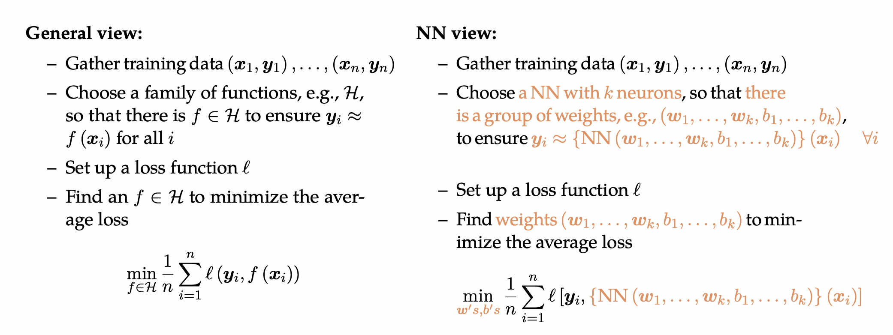

Think DL: Universal Approximation Theorem (UAT)
Acknowledgement: This course (CSCI 8980) is being offered by Prof. Ju Sun at the University of Minnesota in Fall 2020. Pictures of slides are from the course.
Why should we trust Neural Networks (NNs)?
We will start by looking at the supervised learning. Although today’s NNs are not only for the supervised learning, we will use this embedded illustration from machine learning to give you some ideas.

As shown above, the only difference between these two views is that we choose a NN architecture instead of selecting a family of functions. The idea behind both views is function approximation, and we want to emphasize more in function approximation to give you a more accurate description of supervised learning.
Basically you can think of supervised learning in this way. First of all, we have an underlying true function , and our data can be generated by
with dense sampling, which are the \textcolor{MidnightBlue}{blue dots} in Figure 1. Second, we choose a family of functions
. The purpose here is to learn from this family
to find a function
\textcolor{orange}{(orange curve)} that is close to the ground truth function
. This is different with the views mentioned earlier. Those views are to fit the data, which is more about the training error. But here if you really find the ground truth function by learning, you will do perfectly well on eliminating test error.